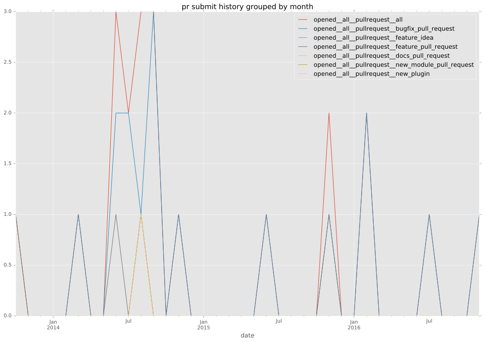
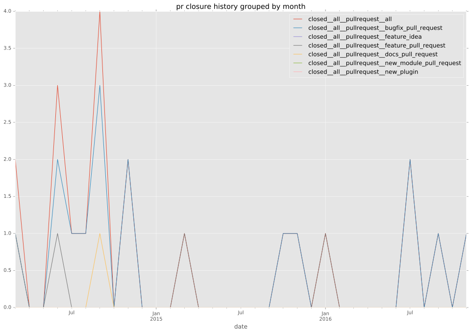

authors
- mgregson
maintainers
- mgregson
- alukovenko
contributors
- mgregson : 30 commits
- abadger : 13 commits
- lippylee : 7 commits
- alukovenko : 4 commits
- zupo : 3 commits
- skottler : 3 commits
- MikeCaspar : 3 commits
- bcoca : 2 commits
- jctanner : 1 commits
- Hypermanzer : 1 commits
total issue counts
feature pull request: 4
pullrequest: 19
docs pull request: 1
bugfix pull request: 14
feature idea: 1
issue: 2
bug report: 1
issue history
pullrequest history


days open by issue type
bugfix pull request
count: 21
std: 61.1654664473
min: 0
max: 151
median: 2.0
mean: 43.7142857143
all
count: 29
std: 132.301426628
min: 0
max: 641
median: 46.0
mean: 86.1034482759
pullrequest
count: 0
std: nan
min: nan
max: nan
median: nan
mean: nan
docs pull request
count: 1
std: nan
min: 59
max: 59
median: 59.0
mean: 59.0
feature pull request
count: 5
std: 82.9246646059
min: 2
max: 209
median: 161.0
mean: 121.0
feature idea
count: 1
std: nan
min: 274
max: 274
median: 274.0
mean: 274.0
issue
count: 0
std: nan
min: nan
max: nan
median: nan
mean: nan
bug report
count: 1
std: nan
min: 641
max: 641
median: 641.0
mean: 641.0
closures grouped by total days open